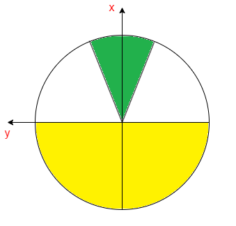

0x00 问题描述
Pendulum 是一个倒立摆问题：
该系统由一个摆锤组成，摆锤的一端连接到固定点，另一端绕着固定点自由摆动。
摆锤从一个随机位置开始，目标是在自由端施加扭矩，使其摆动到重心位于固定点的正上方的垂直位置（最高点），然后坚持得越久越好。
0x10 问题解读
从 Pendulum 页面的描述中，可以得到以下信息：
0x11 环境说明
首先看到这个这个表，它的含义是：
- 在 python 通过以下语句可以创建 Pendulum（版本 v0）的预设环境：
import gymnasiumenv = gymnasium.make("Pendulum-v1")
- 而在这个预设环境中：
- 执行
env.action_space可以得到动作空间（Action Space）为Box(-2.0, 2.0, (1,), float32) - 执行
env.observation_space可以得到观测空间（Observation Space）为Box([-1. -1. -8.], [1. 1. 8.], (3,), float32)
- 执行
0x12 动作空间
文档中给出的动作空间为 [-2.0, 2.0] 的连续空间，表示施加在摆锤自由端上的扭矩，正值表示顺时针方向、负值表示逆时针方向。
0x13 观测空间
观测空间 observation_space 的 3 个独立的观察值分别代表：
- 0:
x = cos(theta)： 摆锤自由端的 x 坐标，范围[-1.0, 1.0] - 1:
y = sin(theta)： 摆锤自由端的 y 坐标，范围[-1.0, 1.0] - 2:
Angular Velocity: 摆锤自由端的角速度，范围[-8.0, 8.0]，顺时针为负、逆时针为正

从官方示意图中不难注意到：
- 整个坐标系与数学上的二维坐标系相比，整体向右旋转了 90°，因此 x 轴的正向指向北方、y 轴的正向指向西方
- theta（即
θ） 就是摆锤与 x 轴正向的夹角 - tau（即
τ） 就是智能体每一步对摆锤施加的扭力
0x14 奖励
Pendulum 的目标是尽快到达垂直向上的位置、并维持最长的步数。
v0 版本步数的上限值为 200。
默认情况下，摆锤每一步获得的奖励，可以用以下公式计算：
公式显示：
- 只要摆锤未到达垂直向上位置，它的每一步都会受到负值惩罚，最大的惩罚值为垂直向下 -16.2736044
- 当且进度摆锤到达垂直向上位置，它才不会受到惩罚，即垂直向上的奖励值为 0
0x15 初始状态
初始状态中，摆锤可以出现在随机的任意位置。
0x16 回合终止
当且仅当回合步数大于 200 才终止。
0x20 要点分析
在这个问题中，目标是让智能体控制摆锤在到达垂直位置后、能维持更长的步数。
看似描述很简单，但作为经典控制的最后一个大 BOSS，它其实隐含了不少难点：
- 操作摆锤所施加的扭矩是连续的
- 需要通过来回摆动抵抗重力、并加速至接近垂直向上位置
- 接近垂直向上位置时减速
- 精准控制摆锤在垂直向上位置（与 x 轴重叠）、并保持 200 步
这些难点我们在 Gym 经典控制中的前 4 题其实都分别解决过：
- Acrobot： 学会抵抗重力摆动
- Cart Pole： 学会维持状态
- Mountain Car： 学会借力（为了接近目标，先远离目标）
- Mountain Car Continuous： 学会连续动作空间
在这基础上，Pendulum 还新引入了一个难点： 学会精准控制。所以这是一道综合挑战。
0x30 训练算法
由于这题是连续动作空间、连续状态空间问题，沿用 Mountain Car Continuous 的 TD3 算法进行训练即可。
0x40 奖励分析
本题环境可以设置重力值，如模拟真实环境可设置 gym.make('Pendulum-v1', g=9.81)（默认情况下 g = 10）。
因为重力的存在，若不施加任何扭矩，摆锤会自然垂直向下，而通过默认奖励公式可知：
摆锤只要不是精准处于垂直向上位置，每一步都会得到一个负面奖励。
分析这个奖励公式，影响每一步的奖励有三个因素：
- 角度 theta 的平方
- 角速度 theta_dt 的平方
- 扭矩 torque 的平方
扭矩就是施加在摆锤中心点的扭力、亦即智能体当前步的的动作，可以想象成摆锤中心是通过一台电机去驱动的
之所以取平方，是为了消除负值：
- 角速度 theta_dt（下文亦为 v）： 顺时针为负数、逆时针为正数
- 扭矩 torque（亦为 tau）： 顺时针为负数、逆时针为正数
故而可知：
- 角度 theta 越大、奖励越少
- 角速度 theta_dt 越大、奖励越少
- 扭矩 torque 越大、奖励越少
而公式中系数的大小说明了三个因素对奖励的影响大小： 角度 > 角速度 > 扭矩
- 当摆锤越往上、角度越少、惩罚越少 —— 鼓励智能体向上摆
- 角速度越大、惩罚越少 —— 鼓励智能体快速往上摆
- 扭矩越大、惩罚越少 —— 加速智能体往上摆
但如果摆过头、角度就会快速变大，惩罚就会增加越快。
0x50 奖励重塑
0x51 状态维持
这种奖励模式和 Acrobot 挑战是一样的，它适用于快速脱离 DEBUFF 的状态达到目标位置（一次性），但并不适合保持状态。
我最初认为摆锤是可以通过训练自主摆到垂直向上位置的，难点在于维持住该状态。
于是我参考此前用在 Cart Pole 的维持做法，在原有奖励机制的基础上追加维持诱导：
- 根据原奖励公式，当
reward == 0时说明摆锤处于垂直向上位置 - 此时判断摆锤的角速度是否接近 0，如果时则追加正向奖励
- 如果摆锤连续多步都处于这个状态，则奖励持续递增，以激励维持状态
def adjust(obs, reward, continue_cnt):
x = obs[0][0] # 自由端的 x 坐标
y = obs[0][1] # 自由端的 y 坐标
v = obs[0][2] # 自由端的角速度
# 如果这一步的奖励为 0，说明达到垂直状态
if reward == 0 :
continue_cnt += 1 # 连续维持的步数 +1
# 检查当前角速度是否接近 0，若是则说明可以维持在这个状态更久，给予更大奖励
if is_close_to_zero(v) :
reward += (continue_cnt * 10)
# 否则仅仅给予少量奖励，因为极可能无法维持在这个状态
else :
reward += continue_cnt
# 不在垂直状态，重置连续维持的步数
else :
continue_cnt = 0
return (reward, continue_cnt)
def is_close_to_zero(num, threshold=1e-4):
return abs(num) < threshold但是我草率了，训练下来发现，摆锤从来就没有在垂直向上的位置停留过：

我猜想：除了垂直向上位置之外、每一步都是负面惩罚，导致智能体很难发现哪种行为才会导致正面奖励。尤其是摆锤的运动环境是一个圆，一旦速度刹不住就会过界、往复循环，与垂直向上位置重合的几率几乎为 0，又何谈持续激励智能体保持在这个位置呢？于是智能体只是在疯狂打转、因为它发现怎么做都是错的。
0x52 梯度逼近
由此我决定把默认的奖励机制完全推翻，重新设计如下：
- 每步先重置奖励为 0，以舍弃默认的奖励机制
- 当摆锤进入绿色区域时可获得奖励
- 绿色区域内部根据摆锤的 位置和角速度 设定梯度奖励
- 梯度范围设计稍微大一些，使得摆锤有更多机会发现奖励、逐步逼近目标
THRESHOLDS = [ 0.01, 0.05, 0.1 ] # 对于垂直向上位置的接近程度，或角速度与 0 的接近程度
REWARD_XY = [ 100, 50, 10 ] # 根据位置距离设定梯度奖励
REWARD_V = [ 1000, 500, 100 ] # 角速度越接近 0 的梯度奖励
def adjust(obs, reward):
x = obs[0][0] # 自由端的 x 坐标
y = obs[0][1] # 自由端的 y 坐标
v = obs[0][2] # 自由端的角速度
reward = 0 # 舍弃默认的奖励机制
for idx, threshold in enumerate(THRESHOLDS) :
if is_close_to_zero(x - 1, threshold) and is_close_to_zero(y, threshold) :
reward += REWARD_XY[idx] # 根据位置接近程度给予奖励
reward += _adjust(reward, v) # 只有当位置接近时、追加角速度接近 0 的奖励（速度越小越容易维持在这个状态）
break
return reward
def _adjust(reward, v) :
for idx, threshold in enumerate(THRESHOLDS) :
if is_close_to_zero(v, threshold) :
reward += REWARD_V[idx]
break
return reward但是我又失策了，训练下来成功率仅有 40% ，和我心里预期相差太远：
主要应该是因为忽略了重力在环境中的影响，摆锤更倾向在底部晃悠：
0x53 滞留惩罚
为此我进一步添加了摆锤在三四象限的滞留惩罚，而且随着步数增长，惩罚越来越大，促使摆锤可以尽快进入一二象限获取奖励：
# x 小于 0 说明摆锤在下方的三四象限
if x < 0 :
reward -= (step * 0.1)即黄色区域是惩罚区，白色部分不惩罚，绿色部分是奖励区：

但是因为我在绿色区域设计的奖励较高、而黄色区域设计的滞留惩罚较低，智能体为了抵消滞留惩罚，反而学会了无限转圈：
0x54 速度惩罚
虽然智能体意识到要脱离惩罚区域，但是和我预期的行为存在出入：光学会了转圈、没学会停留在奖励区域。
除了平衡奖惩数值之外，我还想到了一个原因：会不会是因为摆锤的角速度太大了、导致智能体刹不住车呢？有没有一个中间速度，既让摆锤能够离开三四象限范围、又无法转圈呢？
我捡起我粗糙的物理学大概算了一下：
已知环境最大的角速度为 [-8, 8]，扭矩为 [-2, 2]，要计算满足脱离三四象限的最大速度，就需要计算摆锤从最低点摆动到水平位置、至少需要多大的速度。
根据动能和势能公式：
- 动能：
Ek = 1/2 * mv^2 - 势能：
Ep = mgh
摆锤从最低点开始出发、消耗动能 Ek 摆动到水平位置获得势能 Ep，假设摆锤的运动忽略空气阻力和摩擦力，使得动能 Ek 和势能 Ep 相互转化没有消耗，则可以得到 Ek = Ep， 即 1/2 * mv^2 = mgh，亦即 v = √(2gh)。
本题环境中重力 g = 9.81、摆锤长度为 L = 1，即最低点到水平位置的高度 h = L = 1，
代入公式算得 v = 4.43，换言之，摆锤从最低点摆动到水平位置（刚刚够脱离三四象限）、角速度至少需要 4.43 就可以了
于是我想法是，在角速度大于 5 的时候，引入梯度速度惩罚，避免智能体放飞自我地去转圈圈：
THRESHOLD_V = [ i/10 for i in range(50, 81) ]
REWARD_V = [ -i for i in THRESHOLD_V ]
for idx, threshold in enumerate(THRESHOLD_V) :
if is_close_to_zero(v, threshold) :
reward += REWARD_V[idx]
break这次成功率提升到 64% ，但还是和我心理预期存在差距：
我验证模型时发现，在引入速度限制后，智能体害怕速度过高带来的额外惩罚。
既然都要被处罚，智能体干脆就“咸鱼”不干了，还是趋向重新滞留在三四象限：
0x55 死局
智能体的行为让我陷入了进退两难的地步：
- 如果引导它走出三四象限，必须给予它速度，但一旦控制不住就会转圈
- 如果限制它速度，它又会滞留在三四象限
难道真的是个死局？
死局 … 死局 … 我好像抓住了什么 …
是不是发现智能体行为不对时，我可以马上给一个 terminate 的状态让它马上失败呢？
那什么情况下的行为明显不对呢：
- 长时间滞留三四象限
- 一直转圈
滞留三四象限很好判断，至于要计算摆锤自由端 x < 0 的步数即可。
但是转圈不好判断，无法通过摆锤当前所在的象限或方向准确判断，因为摆锤来回借力时也会经过所有象限、运动过程中智能体也会时不时调整力矩方向，毫无规律。
但是我观察到，摆锤一旦发生转圈行为，速度都是比较大的。
根据动能和势能的计算公式，摆锤转圈需要最小的速度为 6.26，因此我可以间接判断： 当角速度 > 6 超过一定步数时，马上失败。
相关代码如下：
def adjust(obs, action, reward, td: TerminateDetector, step) :
terminated = False
x = obs[0][0] # 自由端的 x 坐标
y = obs[0][1] # 自由端的 y 坐标
v = obs[0][2] # 自由端的角速度，顺时针为- 逆时针为+
a = action[0] # 对自由端施加的扭矩，顺时针为- 逆时针为+
# 判断是否触发终止条件
td.update(x, y, v, a)
if td.is_terminate() :
reward = -1000
terminated = True
return (reward, terminated)
# ... ... 之前的奖励逻辑
# 判断摆锤是否触发终止状态
class TerminateDetector :
# 若浪费步数在 三四 象限徘徊，明显不是最优解
MAX_WANDER = MAX_STEP / 4
# 限制最大角速度
MAX_V = 6
# 若超过一定步数都是最大速度，说明摆锤在转圈
MAX_SPEED = MAX_STEP / 4
def __init__(self) :
self.quadrants = [False] * 4 # 摆锤经过的象限
self.cnt34 = 0 # 三四象限徘徊计数
self.cnt_maxv = 0 # 最大角速度计数
# 更新摆锤状态
def update(self, x, y, v, a):
if x < 0 :
self.cnt34 += 1
if abs(v) >= self.MAX_V :
self.cnt_maxv += 1
def is_wander(self) :
return self.cnt34 > self.MAX_WANDER
def is_overspeed(self) :
return self.cnt_maxv > self.MAX_SPEED
def is_terminate(self) :
return self.is_wander() or self.is_overspeed()但重新训练 10000 次，成功率也只是提升到 70%。
而且所谓的“成功”也仅仅是总奖励不为负，摆锤并没有和 x 轴完全重合：

而剩下的 30% 是由于智能体害怕失败而过早刹车减速，导致在 200 步内还没进入奖励区域：
0x56 精度控制
先解决 x 轴没有完全重合问题。
这个问题的原因其实不难猜到，是因为我前面设计的精度阈值 THRESHOLDS = [ 0.01, 0.05, 0.1 ] 只有百分之一，确实太低了。
我重新调整阈值，在绿色区域中：
- 修改垂直向上位置附近的奖励梯度为千分之一，使摆锤在目标位置的重合度更高
- 同时在该位置追加角速度接近 0 的梯度奖励，同样也是千分之一精度，使摆锤在目标位置的不容易离开
对应的精度设置代码为：
# 在垂直向上附近 0 - 0.009 范围内微调，越接近 0 奖励越大
TTOP_XY = [ i/1000 for i in range(0, 11) ] # 距离递增
RTOP_XY = [ 100 - i * 10000 for i in TTOP_XY ] # 奖励递减
# 在垂直向上附近 0 - 0.009 范围内微调，越接近 0 奖励越大
TTOP_V = [ i/1000 for i in range(0, 11) ] # 速度递增
RTOP_V = [ 100 - i * 10000 for i in TTOP_V ] # 奖励递减引入精度控制后，摆锤通过训练已经能完美重合 x 轴：
0x57 范围与方向
但是即使可以控制精度，现在的成功率也只有 70%，过早刹车的问题还未解决。
我判断是因为没有足够的激励让智能体攀升至最高点，首先想到的是把距离梯度的范围扩大到所有象限：
- 添加蓝色区域：把奖励梯度延伸到整个一二象限范围（低精度）
- 修改黄色区域：三四象限也设置对应的惩罚梯度（低精度）
但是这个做法我隐隐觉得效果不大，因为默认的奖励机制也是全象限的。
福灵心至地，我想到了“趋势” 。
我一直的想法都是只考虑当前的状态处于哪个象限、一二则奖，三四则罚。
但是却忽略了一个因素： 智能体是否在向着目标努力 ？
- 如果智能体处于三四象限，但是它的方向是向着最高点的，为什么要罚？
- 如果智能体处于一二象限，但是它的方向是向着最低点的，为什么要奖？
为了引入“趋势”，我观测了不少训练数据，终于发现：
- 当智能体在左半侧向上运动时，即顺时针摆动，此时角速度 v 为负数、y 轴坐标为正数，故
y * v < 0 - 当智能体在右半侧向上运动时，即逆时针摆动，此时角速度 v 为正数、y 轴坐标为负数，故
y * v < 0
因此摆锤向着垂直向上的方向运动时，y * v 必定 < 0。
用摆锤的“方向”，就能反映出它下一步行为的“趋势”！
于是我在奖励函数由追加了一条： 只要智能体运动方向是往最高点去的，不管在哪个象限都取消处罚。
最终的奖励代码如下：
#============================
# 1. 全局奖惩（目标方向控制）
#============================
# 1.1. 三四象限的坐标阶段阈值和奖励（越接近垂直向下，惩罚越重）
T34_XY = [ i/100 for i in range(0, 101) ]
R34_XY = [ i * 10 - 30 for i in T34_XY ]
# 1.2. 一二象限的坐标阶段阈值和奖励（越接近垂直向上，奖励越大）
T12_XY = [ i/100 for i in range(0, 101) ]
R12_XY = [ 20 - i * 10 for i in T12_XY ]
# 1.3. 角速度绝对值，避免速度过快刹不住。 小于 5 不奖不罚， 大于 5 惩罚
# 速度计算依据：摆锤从最低点摆动至脱离三四象限，至少需要 4.43 的角速度，所以更大的角速度是没必要的，可以避免摆锤刹不住而转圈
T1234_V = [ i/10 for i in range(50, 81) ]
R1234_V = [ -i for i in T1234_V ]
#============================
# 2. 局部极致奖惩（精准控制）
#============================
# 2.1. 在垂直向上附近 0 - 0.009 范围内微调，越接近 0 奖励越大
TTOP_XY = [ i/1000 for i in range(0, 11) ]
RTOP_XY = [ 100 - i * 10000 for i in TTOP_XY ]
# 2.2. 在垂直向上附近 0 - 0.009 范围内微调，越接近 0 奖励越大
TTOP_V = [ i/1000 for i in range(0, 11) ]
RTOP_V = [ 100 - i * 10000 for i in TTOP_V ]
def adjust(obs, action, reward, td: TerminateDetector, step) :
'''
奖励重塑。
:params: obs 当前智能体处于的状态
:params: action 当前智能体准备执行的动作
:params: reward 执行当前 action 后、智能体当前步获得的奖励
:params: td 终止计算器
:params: step 当前步数
:return: 重塑后的 (reward, min_x, max_x)
'''
terminated = False
x = obs[0][0] # 自由端的 x 坐标
y = obs[0][1] # 自由端的 y 坐标
v = obs[0][2] # 自由端的角速度，顺时针为- 逆时针为+
a = action[0] # 对自由端施加的扭矩，顺时针为- 逆时针为+
_y = 1 if y >= 0 else -1
_v = 1 if v >= 0 else -1
direction = _y * _v # < 0 向着垂直向上的方向， > 0 向着垂直向下的方向
# 判断是否触发终止条件
td.update(x, y, v, a)
if td.is_terminate() :
reward = -1000
terminated = True
return (reward, terminated)
reward = 0
# 速度梯度惩罚
for idx, threshold in enumerate(T1234_V) :
if is_close_to_zero(v, threshold) :
reward += R1234_V[idx]
break
# 三四象限
if x < 0 :
# 距离梯度惩罚
for idx, threshold in enumerate(T34_XY) :
if is_close_to_zero(1 + x, threshold) and is_close_to_zero(y, threshold) :
if direction < 0 : # 如果方向接近目标，不处罚，奖励归 0
reward = 0 #（因为在三四象限需要加速，v 可能需要加速到比较大，故连带取消速度处罚）
else :
reward += R34_XY[idx] # 如果方向远离目标，处罚
break
# 一二象限
else :
# 距离梯度奖励（粗粒度距离奖励）
for idx, threshold in enumerate(T12_XY) :
if is_close_to_zero(1 - x, threshold) and is_close_to_zero(y, threshold) :
if direction < 0 :
reward += R12_XY[idx] # 如果方向接近目标，奖励
else :
pass # 如果方向远离目标，不奖
break
# 距离梯度奖励（细粒度距离奖励，精细控制可以获得更大的追加奖励）
for idx, threshold in enumerate(TTOP_XY) :
if is_close_to_zero(1 - x, threshold) and is_close_to_zero(y, threshold) :
if direction < 0 :
reward += RTOP_XY[idx] # 如果方向精确接近目标，追加奖励
reward += _adjust_v(reward, v) # 如果此时角速度很小，追加奖励
break
# 完全在垂直正中且速度为 0，给予最大奖励
if is_close_to_zero(1 - x) and is_close_to_zero(y) and is_close_to_zero(v) :
reward += 1000
return (reward, terminated)
# 根据摆锤在接近垂直位置距离的同时、检查角速度
# 角速度越接近 0，等价于不易离开垂直位置，给予更高的追加奖励
def _adjust_v(reward, v) :
for idx, threshold in enumerate(TTOP_V) :
if is_close_to_zero(v, threshold) :
reward += RTOP_V[idx]
break
return reward重新训练后，成功率提升到 93% ：

0x58 迷惑
在这一刻我真的迷惑了，还有 7% 究竟是何缘由？莫非“方向”还不是真正的决定性因素？
虽然对深度学习而言，93% 的成功率已经挺高了，不过我不甘心、我隐隐觉得它是能够达到 100% 的。
但凡是能够从环境参数中获取到的变量，我都放到奖励函数中了，究竟还遗漏了什么因素没有考虑进去？
等等，“环境中” … 是不是还有 “环境外” ？
我像是抓住了什么，但却没抓住。
0x60 返璞归真：跳出思维定势
我卡在这个问题近两周时间，一度怀疑是不是我的奖励函数写得不对。
于是我尝试地寻找一些被前人总结出来的奖励函数原型，看看哪一种会更适配这个问题：
| 奖励函数 | 说明 | 例子 |
|---|---|---|
| 稀疏奖励 | 在大多数时间步骤中，智能体不会收到任何奖励信号，只有在达成某些重要的、往往难以达成的目标时才会获得奖励 | 如对弈时只有获胜得分、过程不得分就属于这类 |
| 形式化奖励 | 基于任务的具体要求和目标进行量化，并通过明确的数学或逻辑表达式定义 | 本题的默认奖励公式就属于这类 |
| 分布奖励 | 奖励分布在整个任务过程中，以鼓励代理朝着目标稳步前进 | 本题我所修改的梯度奖励就属于这类 |
| 奖励系数变化奖励 | 在学习过程中调整奖励系数或比例，以更好地指导学习过程 | 我在 Cart Pole 中利用步长设计递减因子就属于这类 |
| 中间难度起点奖励 | 用于在任务的难度进程中设置起点，不从最简单或最困难开始，而是选择一个中等难度的起点。这有助于避免过早地智能体于极端条件，同时允许它通过探索和适应中等难度的任务来发展其策略 | 本系列的引子中，有一个《训练 AI 玩 Pokemon》的案例，作者就是跳过了前期大木博士任务后开始训练的，因为他认为早期的 AI 要学会做 NPC 任务真的太难了 |
很明显，我上面进行的奖励重塑，大部分都是基于 “分布奖励” 的，经过我不断的训练实践、它在这题的极限就是 93%。
而当我看到中间难度起点奖励时，一个可以达成 100% 的解决方案就在我脑海中成型了。
0x70 SoID - 中间难度起点奖励
据我长时间观察训练的经验，智能体在前期训练时，一旦初始化落在三四象限，就会有更大几率出现滞留在下方，触发提前终止判定而被结束挑战：
据我分析原因有二：
- 在三四象限初始化时，动力不够，需要先来回摆动借力抵抗重力影响、累积速度冲刺
- 三四象限全是负向激励，智能体探索到一二象限的正向激励比较困难，学习起来很慢
换言之，在前期智能体还未建立起有效的行动策略的情况下，在三四象限初始化简直就是地狱开局，它需要尝试很久才能累积出经验。
那是不是可以控制智能体在前期初始化时落在一二象限呢？毕竟一二象限初始化有以下优势：
- 如果速度方向和目标位置相悖，通过重力的牵引加速，很容易就把重力势能转化为速度，重新回到最高点
- 如果速度方向和目标位置一致，就会因为靠近目标位置，很容易探索到奖励梯度
于是我设计了一个分阶段调整摆锤初始化分布的策略：
- 在 0% - 20% 的训练回合，控制 80% 的初始状态：摆锤位于一二象限、速度向上
- 在 20% - 40% 的训练回合，控制 60% 的初始状态：摆锤位于一二象限、速度向上
- 在 40% - 60% 的训练回合，控制 40% 的初始状态：摆锤位于一二象限、速度向上
- 在 60% - 80% 的训练回合，控制 20% 的初始状态：摆锤位于一二象限、速度向上
- 在 80% - 100% 的训练回合，初始状态完全随机
这样就能使得智能体在前期以相对简单的条件下学习如何达到和保持目标状态，初步建立起有效的策略框架。
随着时间的推移，逐渐增加从三四象限开始的场景比例，使得智能体可以学习如何从更困难的初始条件恢复到目标状态。
最后阶段通过完全随机的初始状态来训练，强化智能体的泛化能力，确保无论摆锤初始在何处，智能体都能尽可能地找到有效的策略来达到目标状态。
简而言之，这个方案就是为智能体的学习任务提供了一条平滑的学习曲线，帮助它更好地学习在各种不同的初始条件下如何有效地达到目标状态，同时避免了一开始就面对过于困难的任务可能导致的学习困难或学习缓慢问题。
相关实现代码如下：
cie = CtrlInitEnv(targs.env, targs.epoches) # 通过不断重试，获得各个阶段理想的初始状态，
init_obs = cie.reset(epoch) # 以使用 “中间难度起点奖励(SoID)” 策略帮智能体建立行动策略框架
class CtrlInitEnv :
def __init__(self, env, max_epoches) -> None:
self.env = env
self.max_epoches = max_epoches
self.stage_20 = int(max_epoches * 0.2)
self.stage_40 = int(max_epoches * 0.4)
self.stage_60 = int(max_epoches * 0.6)
self.stage_80 = int(max_epoches * 0.8)
# 因为摆锤受重力影响，总是趋向徘徊在三四象限，脱离三四象限的几率较低
# 因此控制初始状态：
# 前期尽量从一二象限开始，先建立智能体的行动策略框架
# 中后期逐步引入三四象限的初始状态，使得智能体可以更好地挑战更高难度
def reset(self, epoch) :
obs = self.env.reset()
if not self._reinit(epoch) :
return obs
# --------------------------
# 通过循环控制获取期望的初始状态
# --------------------------
while True :
x = obs[0][0]
y = obs[0][1]
v = obs[0][2]
y = 1 if y >= 0 else -1
v = 1 if v >= 0 else -1
if x > 0 and y * v < 0 :
break
# 重新生成初始状态
obs = self.env.reset()
return obs
def _reinit(self, epoch) :
reinit = False
# 在前 20% 的训练回合，控制 80% 的初始状态都是一二象限、速度向上
if epoch < self.stage_20 :
if self.p80() :
reinit = True
# 在前 40% 的训练回合，控制 60% 的初始状态都是一二象限、速度向上
elif epoch < self.stage_40 :
if self.p60() :
reinit = True
# 在前 60% 的训练回合，控制 40% 的初始状态都是一二象限、速度向上
elif epoch < self.stage_60 :
if self.p40() :
reinit = True
# 在前 80% 的训练回合，控制 20% 的初始状态都是一二象限、速度向上
elif epoch < self.stage_80 :
if self.p20() :
reinit = True
# 最后 20% 的训练回合，完全随机
else :
pass
return reinit
def p80(self) :
return self.percentage(80)
def p60(self) :
return self.percentage(60)
def p40(self) :
return self.percentage(40)
def p20(self) :
return self.percentage(20)
def percentage(self, ratio=100) :
return random.randint(0, 100) < ratio由于 gym 的 env 无法通过指定参数设置初始化的值，因此我这里通过 CtrlInitEnv 不断重试初始化，直到得到我期望的状态才开始这一回合的训练。
训练 10000 回合后，终于在 9400 次训练中达到 100%:
从上图可以注意到，这次训练在 400 和 9400 回合都达到了 100%，但是：
- 400 回合的训练模型时不充分的，因为它还未处理过三四象限开局的场景，所以我没有用这个模型
- 而 9400 回合的时候，开局已经完全初始化了，这个模型有能力应对任意开局的情况
0x80 总结
Pendulum 作为经典控制的最后一题，真的使我收益良多，它打开我训练的思路和视角。
在寻找有效奖励函数的时候，我看到了《Reinforcement Learning and the Reward Engineering Principle》这篇文章，作者在里面提到一个奖励工程原则：
The Reward Engineering Principle:
As reinforcement-learning-based AI systems become more general and autonomous,
the design of reward mechanisms that elicit desired behaviours becomes both more important and more difficult.
当强化学习基础的人工智能（AI）系统变得更加通用和自主时，
如何设计奖励机制来激发期望的行为就变得越来越重要和困难。反观我解这题的过程、确实如此： 复杂环境中的任务会涉及到多个短期和长期目标，此时需要找到一个能够平衡短期和长期的奖励真的非常困难。
最后总结一下这题最终得到的奖励函数形态：
- 全象限梯度逼近（低精度）：
- 黄色区域：三四象限设置惩罚梯度，使得智能体倾向脱离区域
- 蓝色区域：一二象限设置奖励梯度，诱导智能体探索高分区域
- 目标状态维持与精度控制（高精度）：
- 绿色区域：位置靠近目标设置奖励梯度，使摆锤在目标位置的重合度更高
- 绿色区域：角速度接近 0 设置奖励梯度，使摆锤在目标位置的不容易离开
- 提前终止挑战：
- 在三四象限长时间滞留
- 长时间不断转圈
- 额外：向着目标摆动不罚、离开目标摆动不奖
- 平滑学习： 适当调整初始状态，先易后难，快速建立行为策略框架
完整的训练源码： https://github.com/Visuals-AI/gym-course-exercises/tree/master/py/01_Classic_Control/05_Pendulum